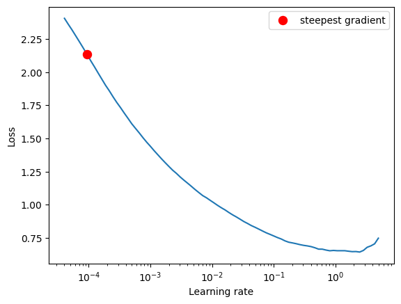

ResNet basic block with optional downsampling. This block implements the basic building block of ResNet architecture, consisting of two convolutional layers with a residual connection. The block can optionally downsample the input using strided convolution and average pooling.
[00:11:18] WARNING - setting conv bias to False as Batchnorm is used
[00:11:18] WARNING - setting conv bias to False as Batchnorm is used
[00:11:18] WARNING - setting conv bias to False as Batchnorm is used
A simple implementation of a ResNet-like neural network.
Type
Default
Details
n_features
List
[1, 8, 16, 32, 64, 128, 256]
channel/feature expansion
num_classes
int
10
num_classes
Usage
x = torch.rand(5, 1, 28, 28)model = ResNet()model(x).shape
[00:35:14] WARNING - setting conv bias to False as Batchnorm is used
[00:35:14] WARNING - setting conv bias to False as Batchnorm is used
[00:35:14] WARNING - setting conv bias to False as Batchnorm is used
[00:35:14] WARNING - setting conv bias to False as Batchnorm is used
[00:35:14] WARNING - setting conv bias to False as Batchnorm is used
[00:35:14] WARNING - setting conv bias to False as Batchnorm is used
[00:35:14] WARNING - setting conv bias to False as Batchnorm is used
[00:35:14] WARNING - setting conv bias to False as Batchnorm is used
[00:35:14] WARNING - setting conv bias to False as Batchnorm is used
[00:35:14] WARNING - setting conv bias to False as Batchnorm is used
[00:35:14] WARNING - setting conv bias to False as Batchnorm is used
[00:35:14] WARNING - setting conv bias to False as Batchnorm is used
[00:35:14] WARNING - setting conv bias to False as Batchnorm is used
[00:35:14] WARNING - setting conv bias to False as Batchnorm is used
[00:35:14] WARNING - setting conv bias to False as Batchnorm is used
[00:35:14] WARNING - setting conv bias to False as Batchnorm is used
[00:35:14] WARNING - setting conv bias to False as Batchnorm is used
[00:35:14] WARNING - setting conv bias to False as Batchnorm is used
torch.Size([5, 10])
Training
# data module configcfg = OmegaConf.load('../config/data/image/fashion_mnist.yaml')BATCH_SIZE =512datamodule = instantiate(cfg, batch_size=BATCH_SIZE, num_workers=20)datamodule.prepare_data()datamodule.setup()# one data point X,y = datamodule.test_ds[0]print("X (C,H,W): ", X.shape, "y: ", y)# a batch of data via dataloaderXX,YY =next(iter(datamodule.test_dataloader()))print("XX (B,C,H,W): ", XX.shape, "YY: ", YY.shape)print(len(datamodule.train_ds))print(len(datamodule.train_ds) // BATCH_SIZE)
[00:52:03] INFO - Init ImageDataModule for fashion_mnist
[00:52:13] INFO - split train into train/val [0.8, 0.2]
[00:52:13] INFO - train: 48000 val: 12000, test: 10000
X (C,H,W): torch.Size([1, 32, 32]) y: 9
XX (B,C,H,W): torch.Size([512, 1, 32, 32]) YY: torch.Size([512])
48000
93
device = get_device()model = ResNet().to(device)criterion = nn.CrossEntropyLoss() optimizer = torch.optim.Adam(model.parameters(), lr=1e-4) #, weight_decay=1e-5)# Initialize LR Finderlr_finder = LRFinder(model, optimizer, criterion, device=device)# Run LR range testlr_finder.range_test( datamodule.train_dataloader(), start_lr=1e-5, # Extremely small starting learning rate end_lr=10, # Large ending learning rate num_iter=100, # Number of iterations to test smooth_f=0.05, # Smoothing factor for the loss diverge_th=5, )# Plot the learning rate vs loss_, lr_found = lr_finder.plot(log_lr=True)print('Suggested lr:', lr_found)lr_finder.reset()
[01:03:58] INFO - Using device: cuda
[01:03:58] WARNING - setting conv bias to False as Batchnorm is used
[01:03:58] WARNING - setting conv bias to False as Batchnorm is used
[01:03:58] WARNING - setting conv bias to False as Batchnorm is used
[01:03:58] WARNING - setting conv bias to False as Batchnorm is used
[01:03:58] WARNING - setting conv bias to False as Batchnorm is used
[01:03:58] WARNING - setting conv bias to False as Batchnorm is used
[01:03:58] WARNING - setting conv bias to False as Batchnorm is used
[01:03:58] WARNING - setting conv bias to False as Batchnorm is used
[01:03:58] WARNING - setting conv bias to False as Batchnorm is used
[01:03:58] WARNING - setting conv bias to False as Batchnorm is used
[01:03:58] WARNING - setting conv bias to False as Batchnorm is used
[01:03:58] WARNING - setting conv bias to False as Batchnorm is used
[01:03:58] WARNING - setting conv bias to False as Batchnorm is used
[01:03:58] WARNING - setting conv bias to False as Batchnorm is used
[01:03:58] WARNING - setting conv bias to False as Batchnorm is used
[01:03:58] WARNING - setting conv bias to False as Batchnorm is used
[01:03:58] WARNING - setting conv bias to False as Batchnorm is used
[01:03:58] WARNING - setting conv bias to False as Batchnorm is used
Learning rate search finished. See the graph with {finder_name}.plot()
LR suggestion: steepest gradient
Suggested LR: 9.33E-05

Suggested lr: 9.326033468832202e-05
# # data module config# cfg_dm = OmegaConf.load('../config/data/image/fashion_mnist.yaml')# cfg_dm.batch_size = 512# datamodule = instantiate(cfg_dm)# datamodule.prepare_data()# datamodule.setup()# device = 'cpu'# print(device)# cfg_mdl = OmegaConf.load('../config/model/image/convnet.yaml')# convnet = instantiate(cfg_mdl.batchnorm)# model = convnet.to(device)N_EPOCHS =5# lr_found = 7e-3 # from lr finder# criterion = nn.CrossEntropyLoss()# optimizer = torch.optim.Adam(model.parameters(), lr=1e-4)steps_per_epoch =len(datamodule.train_ds) // BATCH_SIZEtotal_steps = steps_per_epoch* N_EPOCHSprint(f"size training set: {len(datamodule.train_ds)}, bs: {BATCH_SIZE}, steps/epoch: {steps_per_epoch}, total steps: {total_steps}")# scheduler = torch.optim.lr_scheduler.OneCycleLR(optimizer, max_lr=0.01, steps_per_epoch=steps_per_epochs, epochs=1)scheduler = torch.optim.lr_scheduler.OneCycleLR( optimizer, max_lr=lr_found, # Peak learning rate# total_steps=len(datamodule.train_ds) * N_EPOCHS, # Total training iterations steps_per_epoch=steps_per_epoch, epochs=N_EPOCHS, pct_start=0.3, # 30% of training increasing LR, 70% decreasing anneal_strategy='cos', # Cosine annealing div_factor=10, # Initial lr = max_lr / div_factor# final_div_factor=1e4, three_phase=False# Two phase LR schedule (increase then decrease) )################################lrs = []current_step =0train_loss_history = []eval_loss_history = []avg_train_loss_hist = []avg_eval_loss_hist = []max_acc =0for epoch inrange(N_EPOCHS): i =0 model.train()for images, labels in datamodule.train_dataloader():if current_step >= total_steps:print(f"Reached total steps: {current_step}/{total_steps}")break optimizer.zero_grad() images, labels = images.to(device), labels.to(device) outputs = model(images) loss = criterion(outputs, labels) loss.backward() optimizer.step() scheduler.step() current_step +=1 train_loss_history.append(loss.item())# current_lr = scheduler.get_last_lr()[0] current_lr = optimizer.param_groups[0]['lr'] lrs.append(current_lr)ifnot (i %100):print(f"Loss {loss.item():.4f}, Current LR: {current_lr:.10f}, Step: {current_step}/{total_steps}") i +=1 model.eval()with torch.no_grad(): correct =0 total =0for images, labels in datamodule.val_dataloader():# model expects input (B,H*W) images = images.to(device) labels = labels.to(device)# Pass the input through the model outputs = model(images)# eval loss eval_loss = criterion(outputs, labels) eval_loss_history.append(eval_loss.item())# Get the predicted labels _, predicted = torch.max(outputs.data, 1)# Update the total and correct counts total += labels.size(0) correct += (predicted == labels).sum() acc =100* correct / totalif acc > max_acc: max_acc = acc# Print the accuracyprint(f"Epoch {epoch +1}: Last training Loss {loss.item():.4f}, Last Eval loss {eval_loss.item():.4f} Accuracy = {100* correct / total:.2f}% Best Accuracy: {max_acc:.2f}")# print(f'Current LR: {optimizer.param_groups[0]["lr"]:.5f}')###################plt.figure(1)plt.subplot(211)plt.ylabel('loss')plt.xlabel('step')plt.plot(train_loss_history)plt.plot(eval_loss_history)plt.subplot(212)plt.ylabel('lr')plt.xlabel('step')plt.plot(lrs)
size training set: 48000, bs: 512, steps/epoch: 93, total steps: 465
CPU times: user 2 μs, sys: 1e+03 ns, total: 3 μs
Wall time: 10.5 μs
Loss 2.5942, Current LR: 0.0000093368, Step: 1/465
Epoch 1: Last training Loss 0.8256, Last Eval loss 0.8696 Accuracy = 78.29% Best Accuracy: 79.39
Loss 0.8176, Current LR: 0.0000744355, Step: 95/465
Epoch 2: Last training Loss 0.7054, Last Eval loss 0.7248 Accuracy = 84.31% Best Accuracy: 85.55
Loss 0.6581, Current LR: 0.0000878304, Step: 189/465
Epoch 3: Last training Loss 0.6297, Last Eval loss 0.6788 Accuracy = 86.06% Best Accuracy: 87.50
Loss 0.5701, Current LR: 0.0000548017, Step: 283/465
Epoch 4: Last training Loss 0.6523, Last Eval loss 0.6495 Accuracy = 86.79% Best Accuracy: 87.99
Loss 0.5393, Current LR: 0.0000154962, Step: 377/465
Reached total steps: 465/465
Epoch 5: Last training Loss 0.5910, Last Eval loss 0.6488 Accuracy = 86.93% Best Accuracy: 88.05